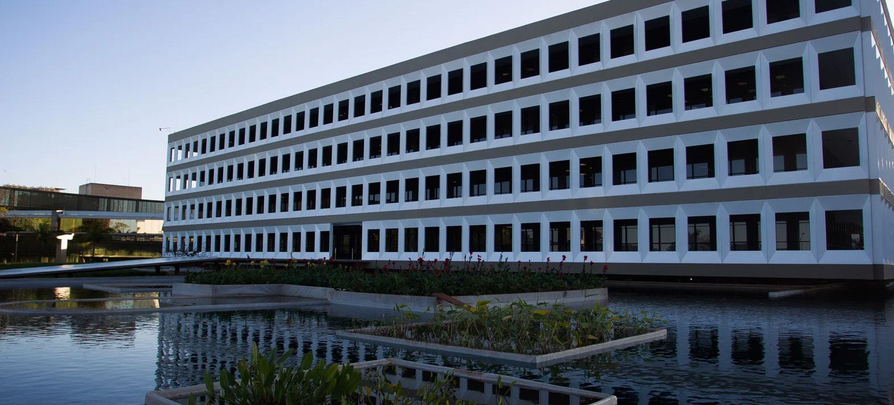

42 min
42 min
→Podcast | Ep. 05
Investimento em infraestrutura deve ser política de Estado
Com Rafael Sacchi, presidente do Sicepot-RS
Todos os episódiosEscolha o seu setor para ele aparecer primeiro.
 ReportagemZPE em Mato Grosso do Sul será a 5ª a operar no país
ReportagemZPE em Mato Grosso do Sul será a 5ª a operar no país ReportagemUm ano depois, o Pacto ainda espera pelo futuro
ReportagemUm ano depois, o Pacto ainda espera pelo futuro ReportagemEmbrapa elabora pacote de 163 medidas para reduzir efeitos do El Niño
ReportagemEmbrapa elabora pacote de 163 medidas para reduzir efeitos do El Niño
ArtigoSecexConsenso e CCAF: as portas e os limites da consensualidade nas concessões ExplicadorSTF tira o ISS da conta do PIS e da Cofins: o que muda para quem presta serviço42 min
ExplicadorSTF tira o ISS da conta do PIS e da Cofins: o que muda para quem presta serviço42 min
Com Rafael Sacchi, presidente do Sicepot-RS
Todos os episódiosCentro de Eventos do Ceará, Fortaleza
Setores: logística, agronegócio, infraestrutura e comércio exterior
Park Shopping Canoas, Canoas (RS)
Organização: IBPM e Conipc
B Hotel, Brasília (DF)
Organização: M&M Lexis
As decisões que movem infraestrutura, portos, agro e tributos, resumidas para ler em cinco minutos. De segunda a sexta, às 7h.